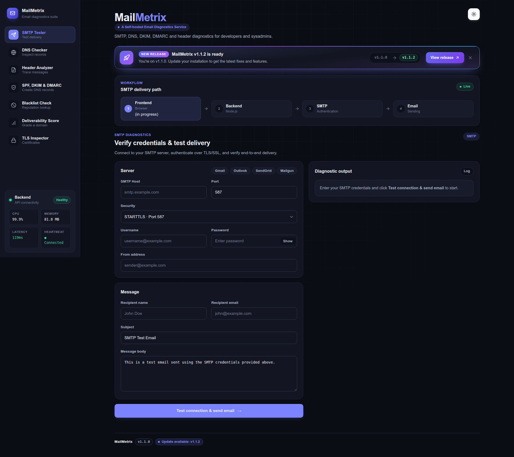
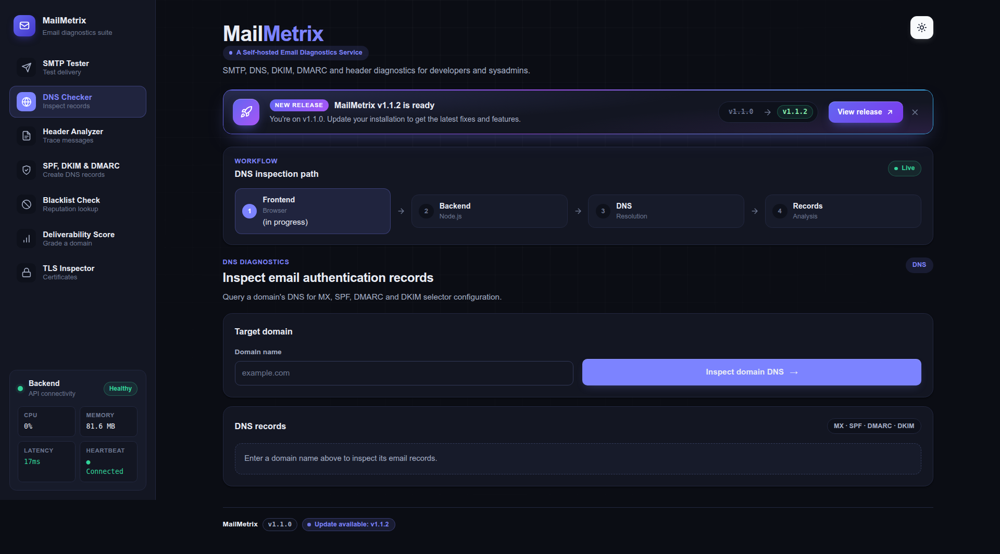
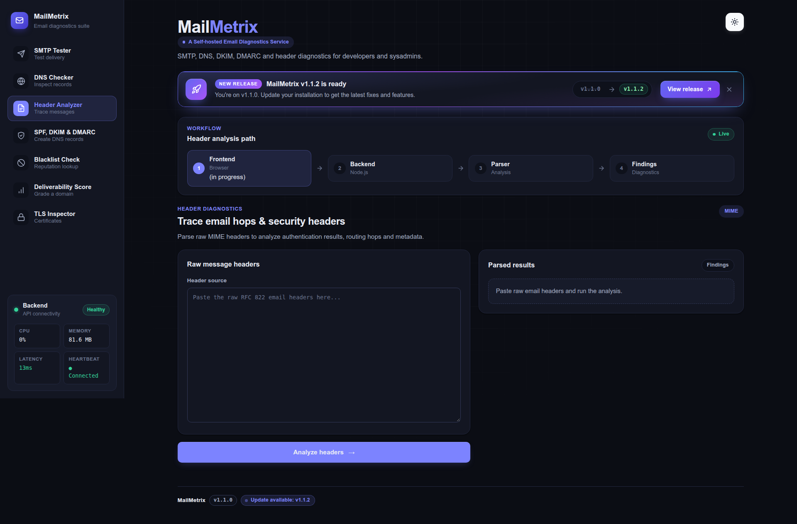
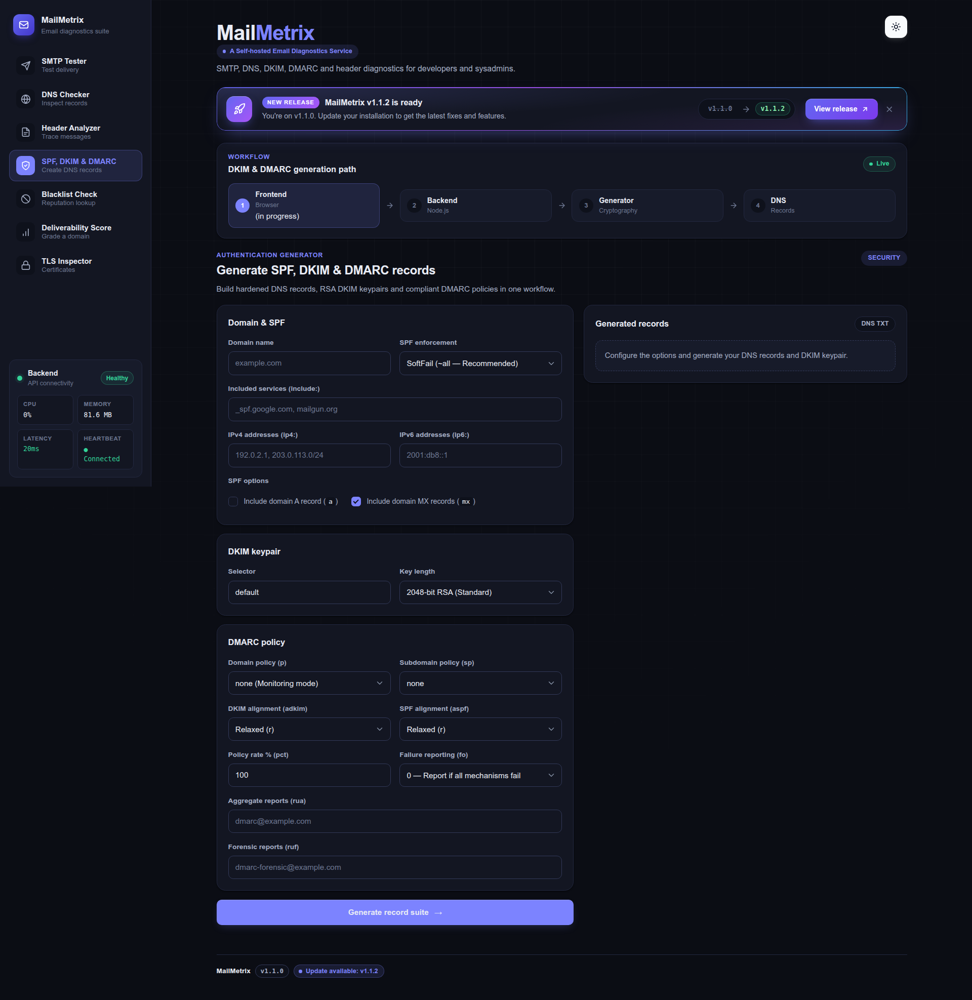
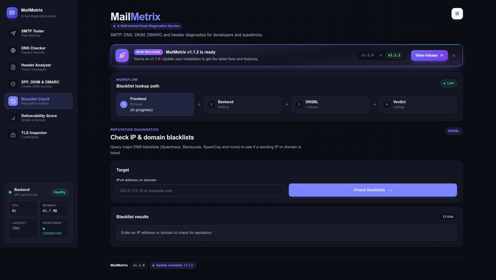
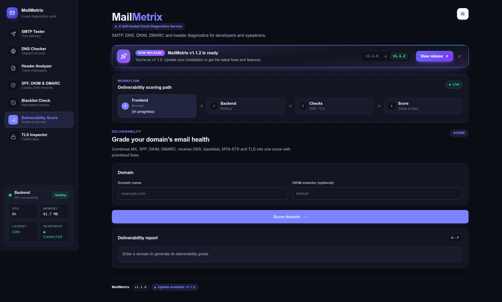
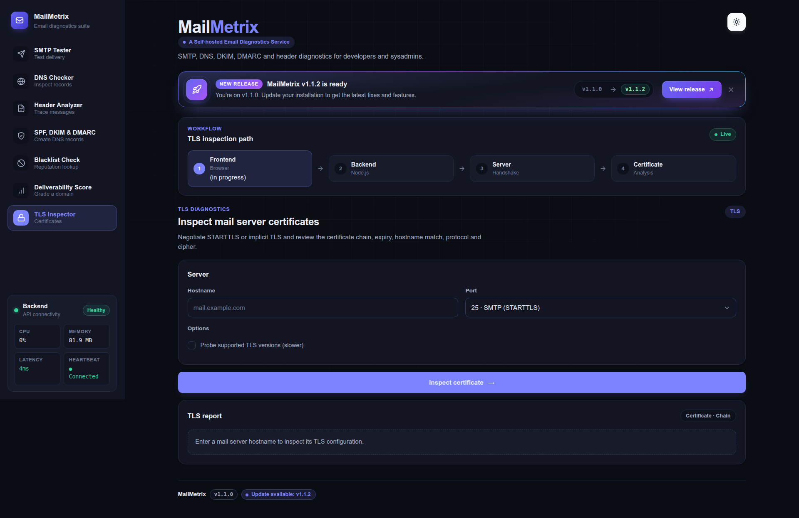

Self-hosted by design
Build and run the application in your own environment using Docker Compose.
Test SMTP connectivity, inspect email authentication records, analyze message headers, generate DKIM/DMARC configuration material, check blacklists, grade deliverability, and inspect TLS certificates with a self-hosted toolkit built for developers and system administrators.
Build locally with Docker Compose. No public demo instance required.
Email troubleshooting can involve SMTP credentials, DNS configuration, and sensitive message headers. MailMetrix provides a self-hosted deployment option so you can run diagnostics in infrastructure you control.
Build and run the application in your own environment using Docker Compose.
Access common SMTP, DNS, header-analysis, authentication-generation, blacklist, deliverability, and TLS tools in one interface.
Self-hosting can reduce dependence on third-party diagnostic services, but it does not automatically guarantee security. MailMetrix includes built-in safeguards, but it has no built-in login, so protect access to your deployment. See the Security section.
Explore the tools available in MailMetrix.

Troubleshoot SMTP connectivity and authentication against a specified mail server. Private and internal addresses are blocked by default, and only standard mail ports are allowed.

Inspect MX, SPF, DMARC, and DKIM records associated with your domain.

Examine email headers to investigate message routing and authentication information.

Generate email authentication configuration material for review and deployment. Key generation runs off the main thread with a concurrency limit.

See whether a sending IPv4 address or domain is listed on major DNS blacklists, including Spamhaus, Barracuda, and SpamCop, with results from 12 lists in one run.

Combine MX, SPF, DKIM, DMARC, reverse DNS, blacklists, MTA-STS, and TLS into a single A–F grade for your domain, with prioritised fixes.

Negotiate STARTTLS or implicit TLS with a mail server and review its certificate chain, expiry, hostname match, protocol, and cipher. Optionally probe which TLS versions it supports.
Whenever a new release is published on GitHub, MailMetrix shows a banner like the one above and a footer badge, so you know it is time to update. The backend checks the latest release and caches the answer (6 hours by default); your browser never contacts GitHub directly. Prefer no outbound check? Set DISABLE_UPDATE_CHECK=true in your .env file to turn it off.
MailMetrix separates the frontend interface from the backend API and builds the application from source.
Unprivileged Nginx · Web interface · API proxy
Node.js · Diagnostic API · Not published to the host
Only the Nginx container is published (host port 50000); the backend is reachable only through the proxy or from the Compose network. SMTP, DNS, blacklist, and TLS operations communicate with external servers, resolvers, and DNS blocklists, and the update check contacts GitHub's API (it can be turned off with DISABLE_UPDATE_CHECK=true). Review the source code to understand the connections made by each feature.
Start with the public source repository and build the application on your own machine.
Open http://localhost:50000 after the containers start. Review the README and its Configuration section before deployment, especially before exposing the instance to any network beyond your own machine.
MailMetrix includes protections against common abuse of a diagnostic tool, but self-hosting still requires you to protect credentials, limit access, and understand how requests are processed.
The SMTP tester validates its destination before connecting. Loopback, private, link-local, and cloud-metadata addresses are blocked, the validated address is the one connected to, and ports are limited to 25, 465, 587, and 2525 by default. The TLS inspector applies the same network guard to its outbound connections.
Sender and recipient must each be a single valid address, and subject and message length are capped. Operators can restrict recipients with ALLOWED_RECIPIENT_DOMAINS or ENFORCE_TEST_RECIPIENT.
Every API route is limited per client IP, with stricter limits for SMTP tests, record generation, DNS checks, blacklist lookups, deliverability scoring, and TLS inspections. Limits are configurable through environment variables.
DKIM key generation runs off the main thread with a concurrency cap and bounded queue. When the server is busy it answers 503 instead of stalling. Deliverability scoring is capped too, with configurable limits on DNS queries per run, concurrent runs, hourly probes, and total run time.
Nginx sends Content Security Policy and other security headers, hides its version, and strips backend framework headers. The public health probe reveals no process internals.
Both containers run as non-root users with all Linux capabilities dropped and privilege escalation disabled. Base images are pinned to supported versions.
MailMetrix has no built-in login. Do not expose it to untrusted networks without reverse-proxy authentication, an identity-aware gateway, or a private network such as Tailscale or WireGuard.
Never commit secrets. Avoid production credentials during testing, and review application logging.
Set TRUST_PROXY to the number of proxies in front of the backend so rate limiting sees real client addresses, and use HTTPS for remote access.
Pinned images and dependencies do not update themselves. MailMetrix shows an in-app notice when a new release is published, so rebuild when it appears and consider automated update tooling for base images.
These safeguards reduce risk but do not replace authentication or network controls. Rate limits are in-memory and per process, and recipient restrictions based on user-supplied fields limit blast radius rather than prevent abuse. Read the full details in the README security section.
MailMetrix is maintained in a public repository. Explore the implementation, report bugs, and contribute improvements through pull requests.